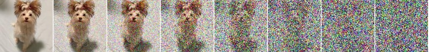

Score Based Generative Modeling
Langevin Dynamics Sampling
Langevin dynamics is a powerful MCMC method that uses gradient information to efficiently sample from complex probability distributions. For score-based models, it provides a natural way to generate samples by following the learned score field.
Mathematical Foundation
Langevin dynamics is based on the Langevin equation, a stochastic differential equation that describes the motion of particles in a potential field:
where:
-
\(x_t\) is the particle position at time \(t\)
-
\(\nabla_x \log p(x_t)\) is the score function (gradient of log probability)
-
\(W_t\) is a Wiener process (Brownian motion)
-
The first term is the drift term (gradient guidance)
-
The second term is the diffusion term (random exploration)
Discretized Langevin Dynamics
For practical implementation, we discretize the continuous-time equation:
where:
-
\(\epsilon\) is the step size (time discretization)
-
\(\eta_t \sim \mathcal{N}(0, I)\) is Gaussian noise
-
\(t\) indexes the discrete time steps
Score-Based Langevin Sampling
For our trained score function \(s_\theta(x) \approx \nabla_x \log p_{data}(x)\), the sampling algorithm becomes:
Algorithm: Score-Based Langevin Sampling
-
Initialize: \(x_0 \sim \mathcal{N}(0, I)\) (random noise)
-
Iterate: For \(t = 0, 1, 2, \ldots, T-1\):
-
Compute score: \(s_t = s_\theta(x_t)\)
-
Add gradient step: \(x_{t+1} = x_t + \frac{\epsilon}{2} \cdot s_t + \sqrt{2\epsilon} \cdot \eta_t\)
-
Where \(\eta_t \sim \mathcal{N}(0, I)\)
-
Return: \(x_T\) as the generated sample
Intuition Behind Langevin Dynamics
The Drift Term (\(\frac{\epsilon}{2} \cdot s_\theta(x_t)\)):
-
Pushes the sample toward high-probability regions
-
The score function points "uphill" in the probability landscape
-
Larger step sizes \(\epsilon\) lead to more aggressive movement
-
The factor of \(\frac{1}{2}\) comes from proper discretization of the continuous Langevin equation
The Diffusion Term (\(\sqrt{2\epsilon} \cdot \eta_t\)):
-
Adds random exploration to avoid getting stuck in local modes
-
Balances the deterministic gradient guidance
-
Ensures the chain can escape local optima and explore the full distribution
Balance Between Drift and Diffusion:
-
Small \(\epsilon\): More exploration, slower convergence, better mixing
-
Large \(\epsilon\): Faster convergence, but may miss modes or become unstable
-
Optimal \(\epsilon\): Depends on the data distribution and model architecture
Convergence Guarantees
Under mild conditions on the target distribution and score function, Langevin dynamics provides strong theoretical guarantees:
Asymptotic Convergence:
If \(\epsilon \to 0\) and \(T \to \infty\), we are guaranteed that \(x_T \sim p_{data}(x)\).
Mathematical Interpretation:
- \(\epsilon \to 0\): The discretization becomes arbitrarily fine, approaching the continuous Langevin equation
- \(T \to \infty\): The Markov chain runs for an infinite number of steps, allowing it to reach the stationary distribution
- \(x_T \sim p_{data}(x)\): The final sample is distributed according to the target data distribution
Challenge in Low Density Regions:
One significant limitation of Langevin dynamics is its poor performance in low density regions of the target distribution:
- Weak Score Signals: In regions where \(p_{data}(x) \approx 0\), the score function \(\nabla_x \log p_{data}(x)\) becomes very small or noisy
- Mode Collapse Risk: The algorithm may fail to explore all modes (mode is a region where the probability density is high, i.e., data points are concentrated) of a multi-modal distribution
- Slow convergence: Langevin Dynamics converges very slowly. Might not even converge if we have zero probability somewhere.
This challenge motivates the development of annealed Langevin dynamics and other advanced sampling techniques that can better handle complex, multi-modal distributions.
Annealed Langevin Dynamics
Mathematical Formulation
We define a sequence of annealed distributions indexed by noise level \(\sigma_t\):
where each \(p_t(x)\) is a smoothed version of the original data distribution.
This equation is derived from the convolution of the data distribution with the noise distribution. Here's the step-by-step reasoning:
If \(Y \sim p_{data}(y)\) and \(\epsilon \sim \mathcal{N}(0, \sigma_i^2 I)\), then the noisy sample is \(X = Y + \epsilon\).
The joint distribution of \((Y, X)\) is:
The joint distribution is derived using the chain rule of probability:
where:
-
\(p(y) = p_{data}(y)\) is the marginal distribution of the clean data
-
\(p(x | y)\) is the conditional distribution of the noisy sample given the clean data
Since \(X = Y + \epsilon\) where \(\epsilon \sim \mathcal{N}(0, \sigma_i^2 I)\), the conditional distribution is:
This is because adding a constant (\(y\)) to a Gaussian random variable shifts the mean but preserves the variance. Therefore:
To get the distribution of \(X\) alone, we marginalize over \(Y\):
We're using the law of total probability (also called marginalization). When we have a joint distribution \(p(y, x)\), to find the marginal distribution of \(x\) alone, we integrate out the other variable:
This is because:
-
The joint distribution \(p(y, x)\) gives us the probability of both \(y\) AND \(x\) occurring together
-
To find the probability of just \(x\) (regardless of what \(y\) is), we sum over all possible values of \(y\)
-
In continuous probability, "summing" becomes integration
Intuition: We're asking "What's the probability of observing a noisy sample \(x\)?" The answer is the sum of probabilities over all possible clean samples \(y\) that could have generated this noisy sample.
Final Form: The noise-perturbed distribution is:
We use multiple scales of noise perturbations simultaneously. Suppose we always perturb the data with isotropic Gaussian noise, and let there be a total of \(L\) increasing standard deviations \(\sigma_1 < \sigma_2 < \ldots < \sigma_L\). We first perturb the data distribution \(p_{data}(y)\) with each of the Gaussian noise \(\mathcal{N}(0, \sigma_i^2 I)\) to obtain a noise-perturbed distribution (the final form we derived above):
Note that we can easily draw samples from \(p_{\sigma_i}(x)\) by sampling \(y \sim p_{data}(y)\) and computing \(x = y + \sigma_i \epsilon\), with \(\epsilon \sim \mathcal{N}(0, I)\).
We estimate the score function of each noise-perturbed distribution, \(\nabla_x \log p_{\sigma_i}(x)\), by training a Denoising Score Matching Model (when parameterized with a neural network) with score matching, such that \(s_\theta(x, \sigma_i) \approx \nabla_x \log p_{\sigma_i}(x)\) for all \(i\). The training objective for \(s_\theta\) is a weighted sum of Fisher divergences for all noise scales. In particular, we use the objective below:
where \(\lambda(\sigma_i)\) is a positive weighting function, often chosen to be \(\lambda(\sigma_i) = \sigma_i^2\). The objective \(\mathcal{L}(\theta)\) can be optimized with score matching, exactly as in optimizing the naive score-based model.
Denoising Score Matching Format:
We can rewrite the objective in Denoising Score Matching model format:
Note: The noise scales \(\sigma_1, \sigma_2, \ldots, \sigma_L\) are typically chosen to be in a geometric progression, meaning \(\sigma_{i+1} = \alpha \cdot \sigma_i\) for some constant \(\alpha < 1\). This ensures that the noise levels decrease exponentially, providing a smooth annealing schedule from high noise to low noise.
Perturbing an image with multiple scales of Gaussian noise: 
After training our score-based model \(s_\theta(x, \sigma_i)\), we can produce samples from it by running Langevin dynamics for \(\sigma_L, \sigma_{L-1}, \ldots, \sigma_1\) in sequence. This method is called Annealed Langevin dynamics, since the noise scale decreases (anneals) gradually over time.
We can start from unstructured noise, modify images according to the scores, and generate nice samples:

Generative Modeling via Stochastic Differential Equations (SDEs)
When the number of noise scales approaches infinity, we essentially perturb the data distribution with continuously growing levels of noise. In this case, the noise perturbation procedure is a continuous-time stochastic process, as demonstrated below.

How can we represent a stochastic process in a concise way? Many stochastic processes are solutions of stochastic differential equations (SDEs). In general, an SDE possesses the following form:
where \(f(x, t)\) is a vector-valued function called the drift coefficient, \(g(t)\) is a real-valued function called the diffusion coefficient, \(w\) denotes a standard Brownian motion, and \(dw\) can be viewed as infinitesimal white noise. The solution of a stochastic differential equation is a continuous collection of random variables \(\{x(t)\}_{t \in [0, T]}\).
These random variables trace stochastic trajectories as the time index \(t\) grows from the start time \(0\) to the end time \(T\). Let \(p_t(x)\) denote the (marginal) probability density function of \(x(t)\). Here \(p_t(x)\) is analogous to \(p_{\sigma_i}(x)\) when we had a finite number of noise scales, and \(t\) is analogous to \(\sigma_i\). Clearly, \(p_0(x)\) is the data distribution since no perturbation is applied to data at \(t = 0\). After perturbing \(p_0(x)\) with the stochastic process for a sufficiently long time \(T\), \(p_T(x)\) becomes close to a tractable noise distribution \(p_T(x) \approx \pi(x)\), called a prior distribution. We note that \(\pi(x)\) is analogous to \(p_{\sigma_L}(x)\) in the case of finite noise scales, which corresponds to applying the largest noise perturbation \(\sigma_L\) to the data.
There are numerous ways to add noise perturbations, and the choice of SDEs is not unique. For example, the following SDE
perturbs data with a Gaussian noise of mean zero and exponentially growing variance. Therefore, the SDE should be viewed as part of the model, much like \(\sigma_i\).
Recall that with a finite number of noise scales, we can generate samples by reversing the perturbation process with annealed Langevin dynamics, i.e., sequentially sampling from each noise-perturbed distribution using Langevin dynamics. For infinite noise scales, we can analogously reverse the perturbation process for sample generation by using the reverse SDE.
Importantly, any SDE has a corresponding reverse SDE, whose closed form is given by
Here \(dt\) represents a negative infinitesimal time step, since the SDE needs to be solved backwards in time (from \(T\) to \(0\)). In order to compute the reverse SDE, we need to estimate \(\nabla_x \log p_t(x)\), which is exactly the score function of \(p_t(x)\).

Note: Langevin dynamics is a specific instance of the reverse SDE where \(f(x, t) = 0\) (no forward drift) and \(g(t) = \sqrt{2}\) (constant diffusion). This shows how Langevin dynamics naturally emerges as a special case of the reverse SDE when we want to sample from a target distribution.
Estimating the reverse SDE with score-based models and score matching
Solving the reverse SDE requires us to know the terminal distribution \(p_T(x)\), and the score function \(\nabla_x \log p_t(x)\). By design, the former is close to the prior distribution \(\pi(x)\) which is fully tractable. In order to estimate \(\nabla_x \log p_t(x)\), we train a Time-Dependent Score-Based Model \(s_\theta(x, t)\), such that \(s_\theta(x, t) \approx \nabla_x \log p_t(x)\). This is analogous to the denoising score matching model \(s_\theta(x, \sigma_i)\) used for finite noise scales, trained such that \(s_\theta(x, \sigma_i) \approx \nabla_x \log p_{\sigma_i}(x)\).
Our training objective for \(s_\theta(x, t)\) is a continuous weighted combination of Fisher divergences, given by
where \(\mathcal{U}[0, T]\) denotes a uniform distribution over the time interval \([0, T]\), and \(\lambda(t)\) is a positive weighting function.
As before, our weighted combination of Fisher divergences can be efficiently optimized with score matching methods, such as denoising score matching and sliced score matching. Once our score-based model \(s_\theta(x, t)\) is trained to optimality, we can plug it into the expression of the reverse SDE to obtain an estimated reverse SDE.
We can start with \(x(T) \sim p_T(x)\), and solve the above reverse SDE to obtain a sample \(x(0)\). Let us denote the distribution of \(x(0)\) obtained in such way as \(p_\theta(x)\). When the score-based model \(s_\theta(x, t)\) is well-trained, we have \(s_\theta(x, t) \approx \nabla_x \log p_t(x)\), in which case \(x(0)\) is an approximate sample from the data distribution \(p_0(x)\).
By solving the estimated reverse SDE with numerical SDE solvers, we can simulate the reverse stochastic process for sample generation. Perhaps the simplest numerical SDE solver is the Euler-Maruyama method. When applied to our estimated reverse SDE, it discretizes the SDE using finite time steps and small Gaussian noise. Specifically, it chooses a small negative time step \(\Delta t\), initializes \(x(T) \sim p_T(x)\), and iterates the following procedure until \(t = 0\):
where \(\eta_t \sim \mathcal{N}(0, I)\).
Then update: \(x \leftarrow x + \Delta x\) and \(t \leftarrow t + \Delta t\).
Note: The function \(f(x, t)\) in the Euler-Maruyama equation is the drift coefficient from the original forward SDE. Common examples include:
-
\(f(x, t) = 0\) (pure diffusion): Used in simple noise perturbation
-
\(f(x, t) = -\frac{1}{2}\beta(t)x\) (linear drift): Used in variance-preserving diffusion
-
\(f(x, t) = -x^2\) (quadratic drift): Creates potential wells
-
\(f(x, t) = x - x^3\) (polynomial drift): Creates multiple stable equilibria
Most Common in Practice: For score-based generative modeling, the most commonly used forms are \(f(x, t) = 0\) (pure diffusion) and \(f(x, t) = -\frac{1}{2}\beta(t)x\) (VP diffusion). The choice of \(f(x, t)\) determines how the data is perturbed during the forward process.
The Euler-Maruyama method is qualitatively similar to Langevin dynamics both update \(x\) by following score functions perturbed with Gaussian noise.